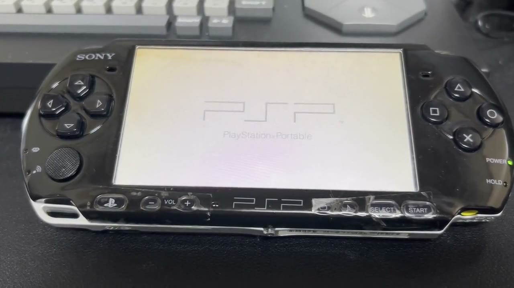
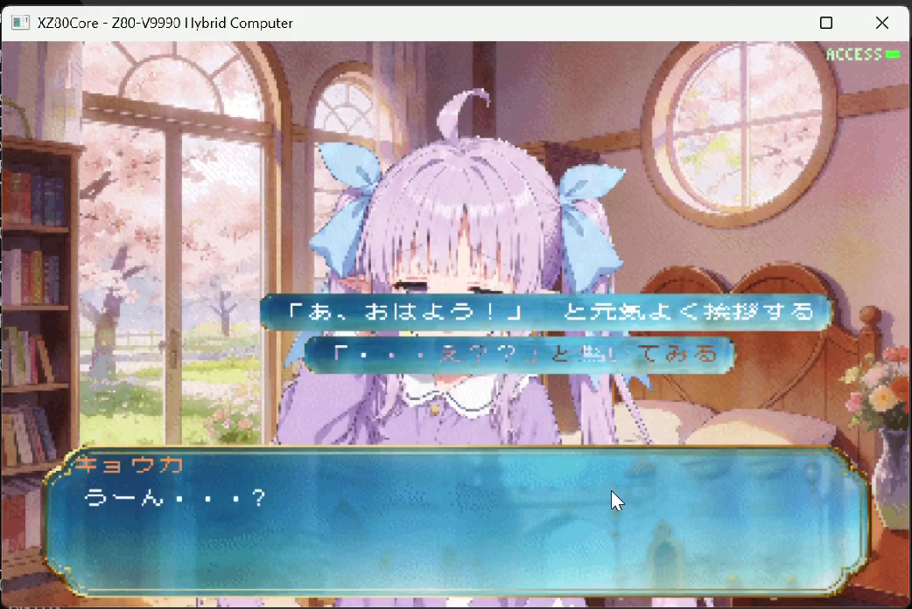
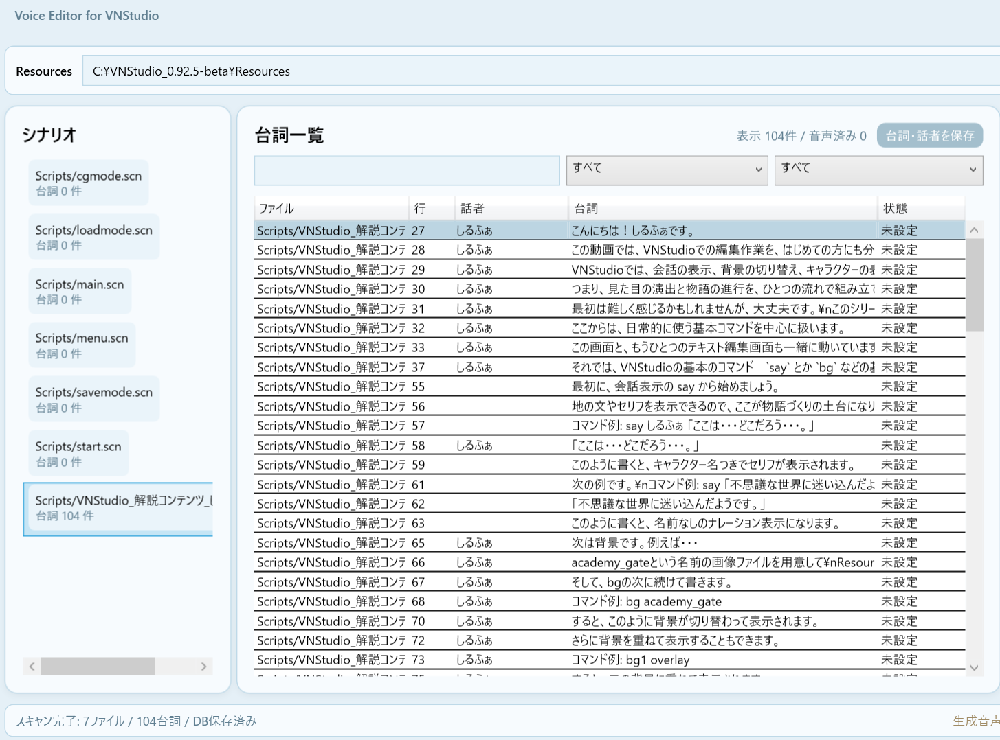
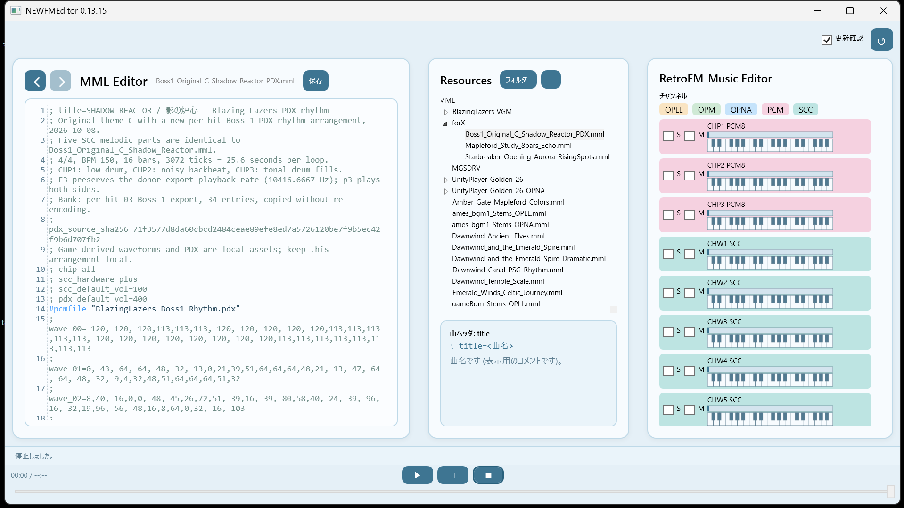
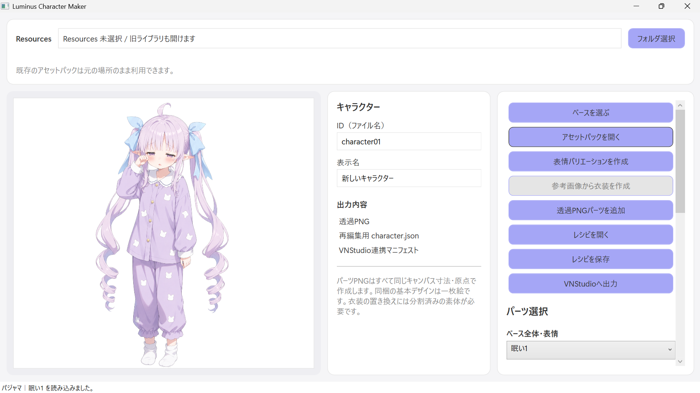

はじめに
このdevlogも、Vol.20という節目を迎えた。
Vol.10でVN Studioのα版の公開から、さらに10回書き重ねてきた。区切りのいい所であるので、ここで一旦立ち止まり、ここまで何を作ってきたのかを振り返りたい。そして、これから何を書いていくのかを、先にお伝えしておきたい。
これまでの20回は、その多くが「物語を動かすための土台」の話だった。スクリプトをどう解釈するか、絵をどう重ねるか、どの機械で動かすか。土台は、この20回でずいぶん形になった。
しかし、土台だけでは作品は立ち上がらない。実際に物語に命を吹き込むのは、「声」であり、「音」であり、「絵」だ。次回からは、その「命を吹き込む側」の道具たちを、一つずつ紹介していきたい。
今回はその橋渡しの回である。
第1章：土台を積み上げた、20巻
まず、ここまでの歩みを振り返っておこう。
はじまりは、技術の話ではなかった。Vol.0で制作の思想を書き、Vol.6で「道具は消えるべきである」という考え方を置いた。作る人が複雑さに煩わされず、表現に集中できること。そこが出発点だった。
そこから、作品を動かす仕組みを一つずつ作っていった。スクリプトエンジン、レイヤー表示、アセットの読み込み(Vol.2〜Vol.4)。Z80マシン語のランタイム、その複数コア化、バンク切り替え(Vol.5・Vol.8・Vol.13)。
一時期からは、'80年代のPC（パソコン）をテーマにしてきた。Vol.7で、幻のVDPであるV9990にZ80というCPUと架空のボディを与えた、オリジナルの「夢の8bitマシン」XZ80を構想した。Vol.11でそれが実際に動き、Vol.14ではランタイムを一から作り直した。Vol.9では、わずかなFM音源とPSGでなぜあれほど鳴るのかを問い、Vol.15で複数の音源を同時に鳴らすところまで進めた。
さらに、作る人の使い勝手(Vol.16)、X68000の外部ディスク(Vol.17)、PSP対応(Vol.18)、MSXの実機系譜(Vol.19)へと、届けられる場所を広げてきた。
その結果、今は一つの物語を、Unity・XZ80・PSP・X68000・MSXという五つの実行先で動かせるところまで来た。同じ物語を、違う場所あるいは当時夢見た場所で、その機械らしく立ち上げる。Vol.19で「共通の魂と、固有のボディ」と書いたとおりの形に、土台の側は近づいてきた。

第2章：土台だけでは、作品にならない
だが、具体的に作品づくりをしながら開発を進めていく中で、気づいた事があった。
物語を動かせることと、実際に作品が立ち上がり完成までもっていくこととは、別だということ。VNStudioだけでは、まだ「創作に集中できる、理想の制作環境」とはいえないことに。
台詞が表示され、絵が切り替わり、選択肢で分岐する。そこまでは土台の仕事だ。だがプレイヤーの心を動かすのは、絵や文章だけではない。それはキャラクターの声でもあり、場面に流れる音楽でもあり、登場人物の多様な表情やしぐさでもある。土台がどれだけ整っても、声も音も絵もなければ、物語はまだ骨組みのままだ。

私は、ツールの企画・UIの設計・プログラム・スクリプト・絵・音楽など多岐にわたって、できるかぎり自分の表現で自らの手でやりたいと考え、ここまで進めてきた。これは、すべて自前でやることに執着しているわけでも、現在のAIなどの最新技術を遠ざけているのでもない。むしろ逆であり、私が理想とするような直感で操作できるシンプルで使いやすい道具を生み出し、一人の作り手が、思いついたことを声や音や絵の形にするまで、思考を途中で止めずに集中して進められるようにしたい。そのための手段として、新しい技術はむしろ積極的に使っていきたい、と考えている。
だから、VN Studioという一つのツールの外側に、声のための道具、音のための道具、絵のための道具を、ここ最近つくってきた。
第3章：理想の道具は、一つだけではない
次回から紹介したいのは、VN Studioの制作を支える、三つの道具である。それぞれ、声・音・絵という、作品に命を吹き込む要素に対応している。
声――Voice Editor。 スクリプトの中の台詞を集め、声をつける道具である。VNStudioのスクリプトに書かれているセリフを自動認識し、キャラクターごとの音声をワンボタンで一括生成することができる。音声コマンドの実装も同時に自動で行う。個別に音声の再生成も可能。音声の生成作業はすべて別の管理領域で行われ、制作の最後の段階で上書きするため、ゲームスクリプトの破損などのトラブルも防いでいる。

音――RetroFM-Music Editor。 往年の名機、FM音源のために、MMLという記譜でBGMを書き、編集しながらその場で鳴らす道具である。制作したMMLファイルは、そのままVNStudioで鳴らすことができる。Vol.9で問い、Vol.14・Vol.15で扱った、あのFM音源の系譜に連なる。OPLLやOPNA、OPM、またSCCといった多彩な音源を、一つの曲データの中で扱える。音の話は、この道具の回で改めて掘り下げたい。

絵――Luminus Character Maker（仮）。 立ち絵を作るための道具である。VNStudioの立ち絵データを読み込んで、キャラクターごとに違ったバリエーションをつくることができる。パーツを重ねて姿を組み立てるほか、参考にする絵から衣装の差分を起こしたり、さまざまな表情やアクションをつくることが可能になる予定で、開発を進めている。このツールで制作した立ち絵のバリエーションは、そのままVNStudioで使えるようにする。

この三つのツールも含め、VNStudioシリーズに共通してこだわっていることがある。
それは、作る人が、自分のやりたいことを見失わないようにすることだ。機械の都合に振り回されず、自分のやりたいことをダイレクトに行えるツールであること。そのために、UIも含め、シンプルで直感的にわかりやすい設計にする、極限まで自動化できることは自動化し、ユーザーの作業を減らす。そこにこだわって開発を進めてきた。
声も、音も、絵も、一人の作り手が自分の思いを形にするための手段のひとつだ。その手段を、さらに本体の外側にも揃えて充実させていく。
おわりに：今後に向けて
これまでの20巻を振り返ってみると、土台を作る話が多かったのは、たぶん順番として自然だったのだと思う。まず物語が動く場所を用意し、それが五つの機械に広がり、そのうえで、その物語へ声や音や絵を与える道具へと、関心が移ってきた。
次の巻からは、その声・音・絵の道具を、紹介していきたい。Voice Editorで台詞に声をつける話、RetroFM-Music EditorでFM音源を鳴らす話、Luminus Character Makerで立ち絵と表情を作る話。どれも、作品に命を吹き込むための道具の話になる。
物語を作ることと、それを形にする道具を作ること。その両方を続けながら、一人ひとりが自分の思いや感性を大切にし、自分の物語として表現できるような、小さなきっかけを届けていきたい。この願いは、当初から変わっていない。
土台は固まりつつある。ここからは、その上で、「あなたの物語」に命を吹き込めるよう、新しい道具を生み出していきたい。